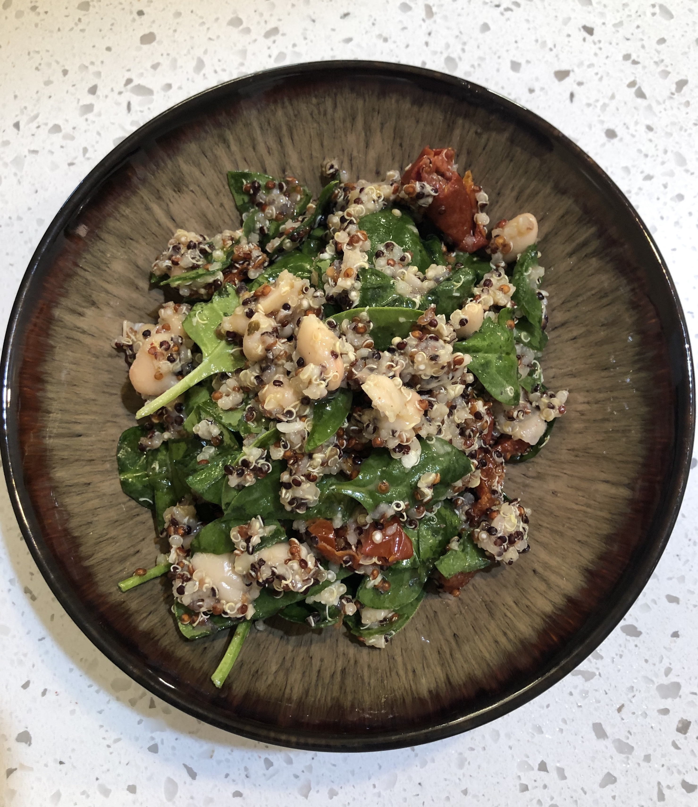

Tuscan Quinoa Salad

Fresh and packed full of protein!
This simple dish will leave you full and refreshed. Serve
it as a side dish, put it in a wrap, or have a little extra to make
it a meal on it's own.
Ingredients:
- 1.5 cups quinoa
- 3 cups water
- 1(15 ounce) can white beans, drained and rinsed
- 1(6 ounce) jar sun dried tomatoes, drained
- 4 cups spinach
- 1/4 cup parmesan cheese, grated
- 1/4 cup lemon fresh juice
- 1 tbsp salt
- 1 tsp pepper
Directions:
- Combine quinoa and water in pot and bring to a boil.
- Once boiling, reduce heat and cook for about 20 minutes uncovered on low heat.
- Remove pot from heat and cover with lid.
- Let sit for 5 minutes.
- Remove lid and fluff quinoa
- Add fluffy cooked quinoa to a large bowl
- Add sun-dried tomatoes (drained but oil reserved), cheese, spinach and beans to the bowl and stir to combine.
- Whisk together lemon juice, reserved oil, salt and pepper to make dressing.
- Pour dressing over quinoa salad and incorporate into the rest of the ingredients.
- Enjoy in a wrap sandwich, as a side dish or as is!